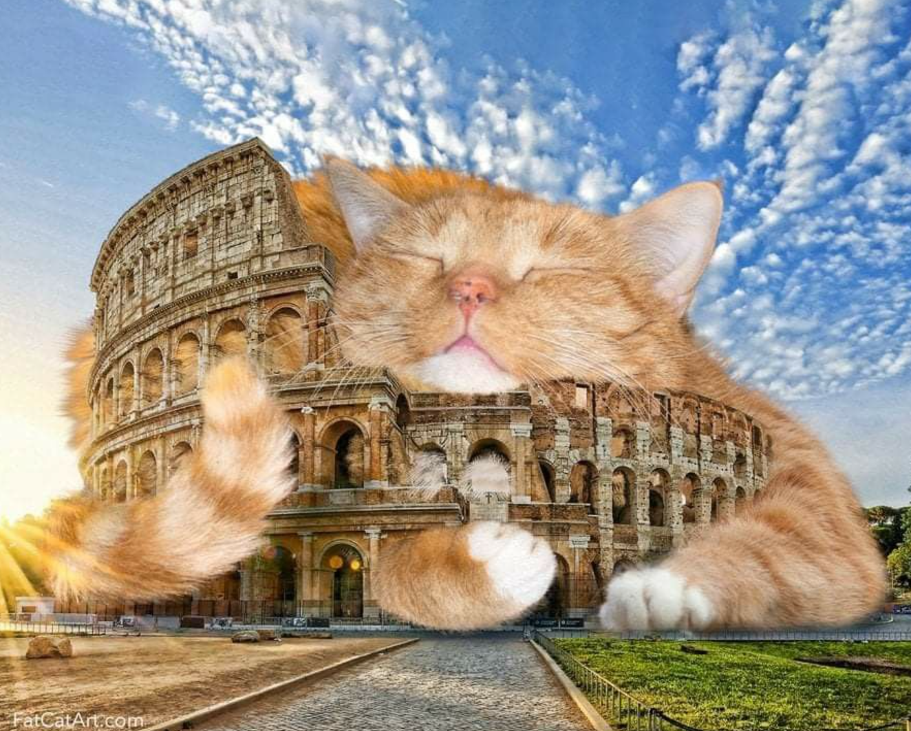

MathPhysCS CodeLab
Scrollytelling with Closeread
Published
November 13, 2025
Create something here
- list1
- list 2
| 表情 | 图标 |
|---|---|
| smile | |
| grin | |
| laugh | |
| wink | |
| happy-cry | |
| sad | |
| cry | |
| tired | |
| sleepy | |
| yawn | |
| neutral | |
| thinking | |
| worried | |
| shocked | |
| angry | |
| grimace | |
| kiss | |
| nerd | |
| sweat | |
| cool | |
| tongue | |
| tongue-wink | |
| eye-roll | |
| blush | |
| innocent | |
| devil | |
| zipper | |
| mask | |
| thermometer | |
| head-bandage | |
| hushed | |
| confused | |
| exhausted | |
| party | |
| raised-eyebrow | |
| slight-smile | |
| slight-frown | |
| smile-open | |
| frown-open | |
| grimace | |
| wide-grin | |
| beam-sweat | |
| squint-tears | |
| star-struck | |
| heart-eyes | |
| cheeky | |
| upside-down | |
| cowboy | |
| disguised | |
| lying | |
| pleading | |
| holding-back-tears | |
| saluting |
😊 happy |
🙂 calm |
😕 puzzled |
😴 sleepy |
🤯 mind-blown |
😅 rush |
❌ blocked |
😃 excited |
😍 love |
🙃 upside-down |
🥱 yawn |
😎 cool |
🤔 thinking |
😠 angry |
😵 dizzy |
🤐 zip |
🤗 hug |
🥳 party |
😇 halo |
🤥 lie |
🙂 calm |
😕 puzzled |
😴 sleepy |
🤯 mind-blown |
😅 rush |
❌ blocked |
😃 excited |
😍 love |
🙃 upside-down |
🥱 yawn |
😎 cool |
🤔 thinking |
😠 angry |
😵 dizzy |
🤐 zip |
🤗 hug |
🥳 party |
😇 halo |
🤥 lie |
Focus: Quarto Closeread extension
Tomorrow: review Zhihu category-theory post; update Mathpix subscription
Mood: calm
这段文字出现时触发 intro 层。
这段文字出现时触发 intro 层。
2 方法
3 结果
4 讨论 & 展望
4.1 细节放大
继续滚动，右侧切换到更高分辨率截图：@fig3
[@fig3]{fade-in transition=0.9s}
4.2 未来工作
最后给出总结图，并轻微放大收尾：@fig4

[@fig4]{scale-by=1.1 fade-in transition=1.2s}